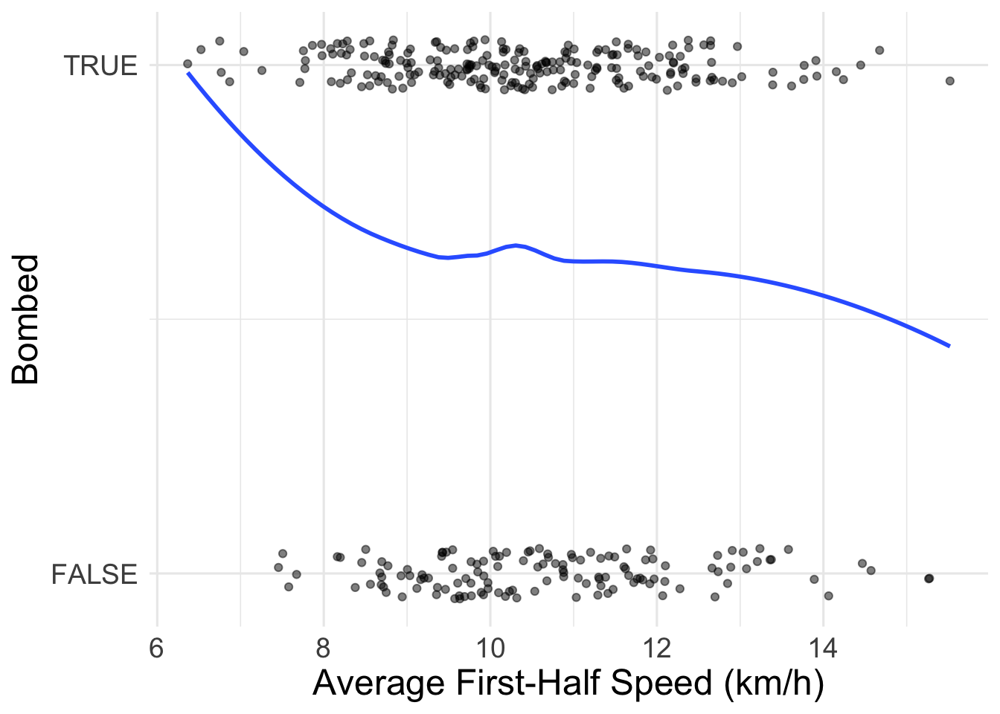
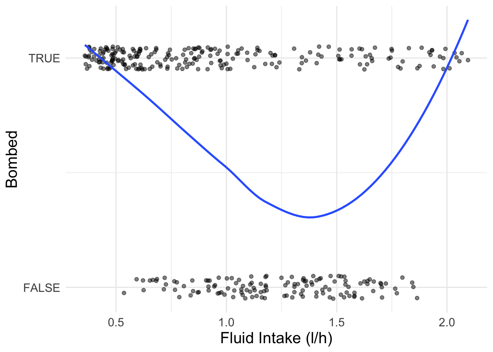
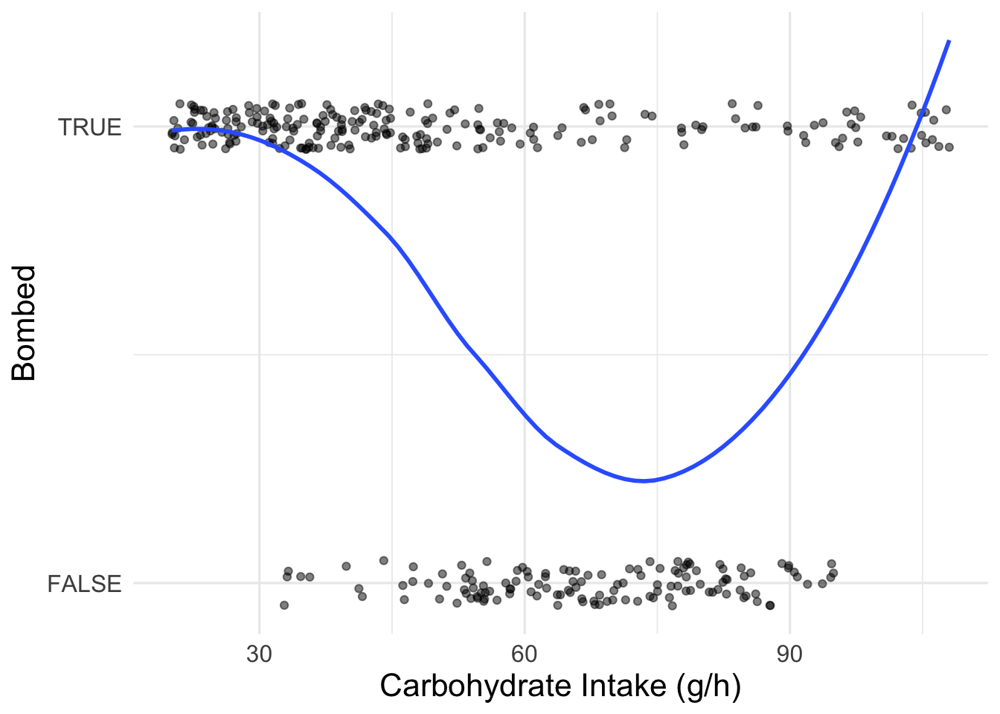
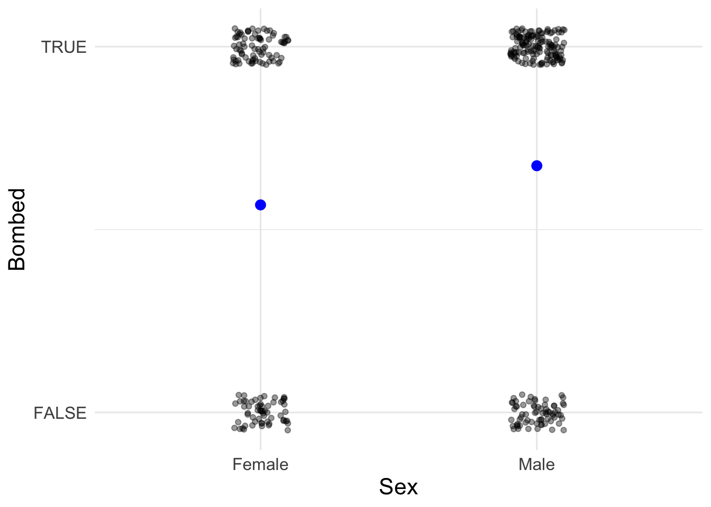
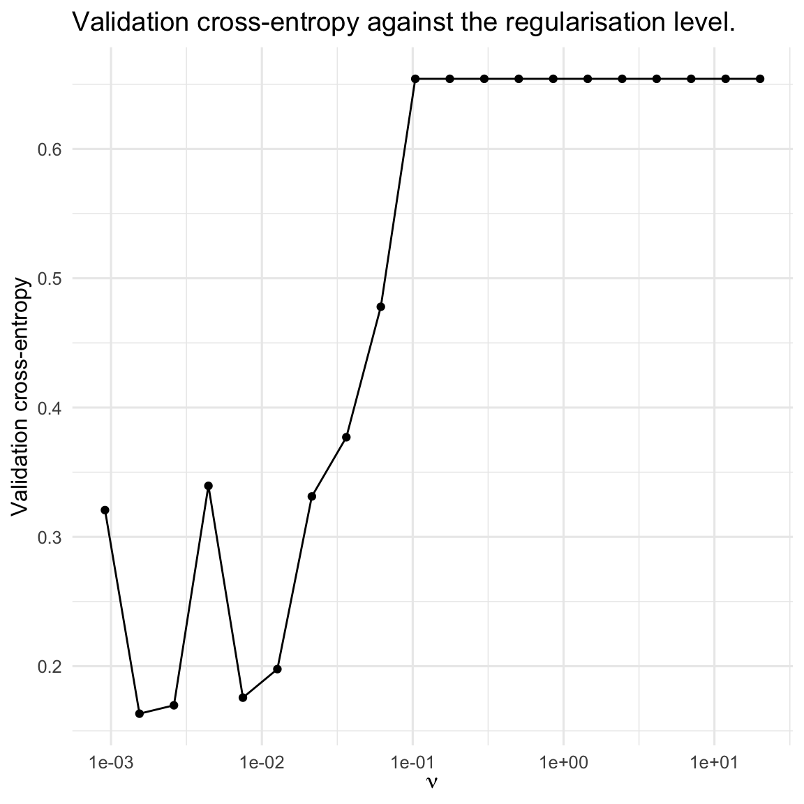
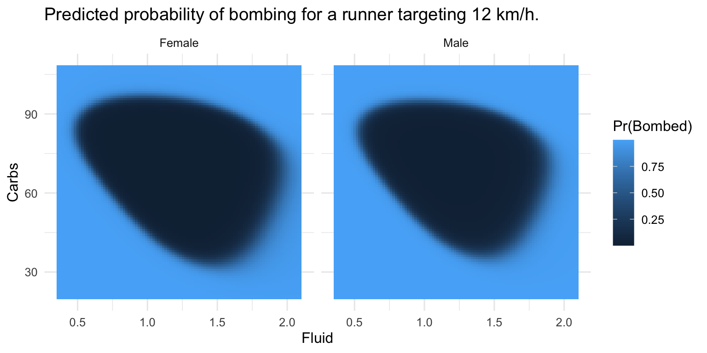
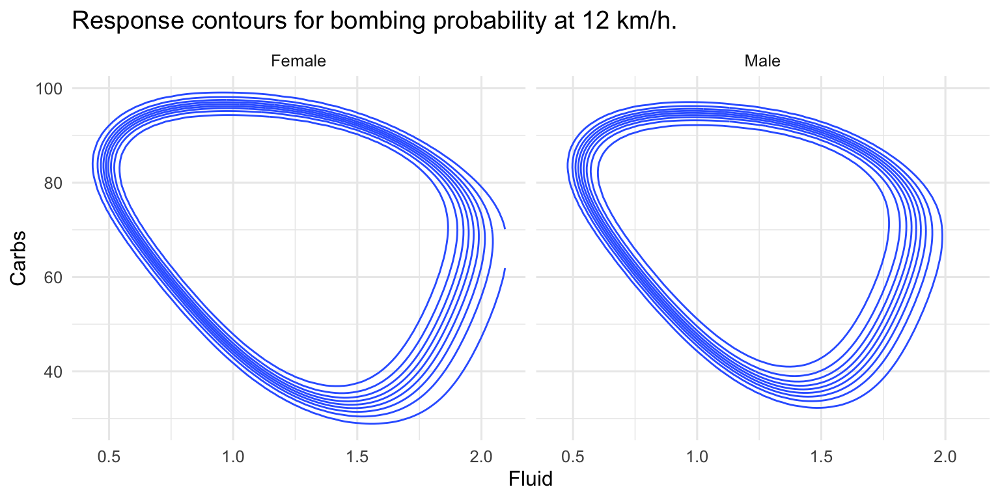
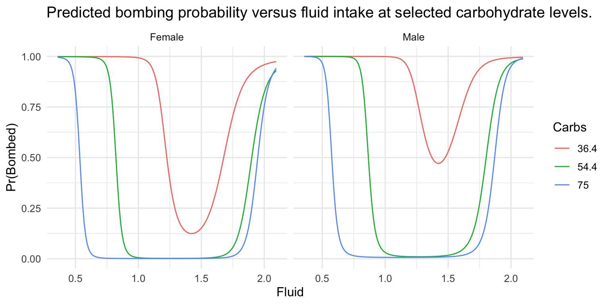

library(ggplot2)
library(dplyr)
library(tidyr)
library(gridExtra)
theme_set(theme_minimal(base_size = 12))
set.seed(2026)A2_Main_Quarto
Project Set Up:
dat <- read.table("HittingTheWall_2026.txt", header = TRUE)
# Make Bombed a Boolean:
dat$Bombed <- as.logical(dat$Bombed)
# Make Sex a Factor For Plotting Purposes Only:
dat$Sex_plot <- factor(dat$Sex, levels = c(0, 1), labels = c("Female", "Male"))a)
Exploratory Data Analysis:
# Average First-Half Speed vs. Bombed:
p1 <- ggplot(dat, aes(x = AveSpeed, y = as.numeric(Bombed))) +
geom_jitter(height = 0.05, width = 0, alpha = 0.5) +
geom_smooth(method = "loess", se = FALSE) +
scale_y_continuous(
breaks = c(0, 1),
labels = c("FALSE", "TRUE")) +
labs(y = "Bombed",
x = "Average First-Half Speed (km/h)") +
theme(
axis.title.x = element_text(size = 18),
axis.title.y = element_text(size = 18),
axis.text.x = element_text(size = 14),
axis.text.y = element_text(size = 14)
)
# Fluid Intake vs. Bombed:
p2 <- ggplot(dat, aes(x = Fluid, y = as.numeric(Bombed))) +
geom_jitter(height = 0.05, width = 0, alpha = 0.5) +
geom_smooth(method = "loess", se = FALSE) +
scale_y_continuous(
breaks = c(0, 1),
labels = c("FALSE", "TRUE")) +
labs(y = "Bombed",
x = "Fluid Intake (l/h)") +
theme(
axis.title.x = element_text(size = 16),
axis.title.y = element_text(size = 16),
axis.text.x = element_text(size = 12),
axis.text.y = element_text(size = 12)
)
# Carbohydrate Intake vs. Bombed:
p3 <- ggplot(dat, aes(x = Carbs, y = as.numeric(Bombed))) +
geom_jitter(height = 0.05, width = 0, alpha = 0.5) +
geom_smooth(method = "loess", se = FALSE) +
scale_y_continuous(
breaks = c(0, 1),
labels = c("FALSE", "TRUE")) +
labs(
y = "Bombed",
x = "Carbohydrate Intake (g/h)") +
theme(
axis.title.x = element_text(size = 16),
axis.title.y = element_text(size = 16),
axis.text.x = element_text(size = 12),
axis.text.y = element_text(size = 12)
)
# Sex vs. Bombed:
p4 <- ggplot(dat, aes(x = Sex_plot, y = as.numeric(Bombed))) +
geom_jitter(height = 0.05, width = 0.1, alpha = 0.4) +
stat_summary(fun = mean, geom = "point", size = 3, colour = "blue") +
scale_y_continuous(
breaks = c(0, 1),
labels = c("FALSE", "TRUE")) +
labs(y = "Bombed",
x = "Sex") +
theme(
axis.title.x = element_text(size = 16),
axis.title.y = element_text(size = 16),
axis.text.x = element_text(size = 12),
axis.text.y = element_text(size = 12)
)
p1`geom_smooth()` using formula = 'y ~ x'
p2 `geom_smooth()` using formula = 'y ~ x'
p3`geom_smooth()` using formula = 'y ~ x'
p4
The exploratory analysis suggests that the relationship between the predictors and the probability of bombing is not purely linear. In particular, the response appears to vary nonlinearly across both Fluid and Carbs, and there may also be interaction-type behaviour between nutritional variables and demographic/performance variables. This provides preliminary motivation for considering a nonlinear classifier such as a neural network. After running the plots, comment specifically on whether the smoothed trends appear curved, whether there are threshold-like regions, and whether separation appears stronger in some predictor combinations than in others.
b)
c)
# Definition of Softmax Activation Function for Input Matrix Z:
softmax_mat <- function(Z) {
# Calculation of Shifted Matrix by Max Column-Wise Value for Numerical Stability:
Z_shift <- sweep(Z, 2, apply(Z, 2, max), FUN = "-")
# Element-Wise Exponentiation of Shifted Matrix:
exp_Z <- exp(Z_shift)
# Normalisation of Each Column Returning Class Probabilities:
exp_Z / matrix(colSums(exp_Z), nrow = nrow(Z), ncol = ncol(Z), byrow = TRUE)
}d)
e)
Create Input and Output Matrices:
# Make Bombed Variable Boolean:
dat$Bombed <- as.logical(dat$Bombed)
# Keep a Numeric Version for Modelling:
dat$Sex_num <- ifelse(dat$Sex == "Male" | dat$Sex == 1, 1, 0)
# Creation of Xu = Demographic/Performance Inputs:
Xu <- t(as.matrix(dat[, c("AveSpeed", "Sex_num")]))
storage.mode(Xu) <- "double"
# Creation of Xv = Nutrition Inputs:
Xv <- t(as.matrix(dat[, c("Fluid", "Carbs")]))
storage.mode(Xv) <- "double"
# Creation of Two-Output Response Matrix:
Y <- rbind(
Bombed_FALSE = as.numeric(!dat$Bombed),
Bombed_TRUE = as.numeric(dat$Bombed))f)
g)
Feed Forward & Objective Function
# Definition of the Derivative of tanh in Terms of the Activation:
tanh_prime_from_act <- function(A) {
1 - A^2
}
# Function to Unpack Parameter Vector into Split-Brain Network Weights and Biases:
unpack_split_params <- function(theta, pu, pv, m, q) {
# Index for Position Tracking in Parameter Vector:
idx <- 1
# Helper Function to Extract Next k Parameters from Theta:
take <- function(k) {
out <- theta[idx:(idx + k - 1)]
idx <<- idx + k
out
}
# Extraction of First-Layer Weights and Biases for u-Hemisphere:
W1u <- matrix(take(m * pu), nrow = m, ncol = pu)
b1u <- matrix(take(m), nrow = m, ncol = 1)
# Extraction of First-Layer Weights and Biases for v-Hemisphere:
W1v <- matrix(take(m * pv), nrow = m, ncol = pv)
b1v <- matrix(take(m), nrow = m, ncol = 1)
# Extraction of Second-Layer Weights and Biases for u-Hemisphere:
W2u <- matrix(take(m), nrow = 1, ncol = m)
b2u <- matrix(take(1), nrow = 1, ncol = 1)
# Extraction of Second-Layer Weights and Biases for v-Hemisphere:
W2v <- matrix(take(m), nrow = 1, ncol = m)
b2v <- matrix(take(1), nrow = 1, ncol = 1)
# Extraction of Output-Layer Weights and Biases:
W3 <- matrix(take(q * 2), nrow = q, ncol = 2)
b3 <- matrix(take(q), nrow = q, ncol = 1)
# Return All Unpacked Parameters as Named List:
list(
W1u = W1u, b1u = b1u,
W1v = W1v, b1v = b1v,
W2u = W2u, b2u = b2u,
W2v = W2v, b2v = b2v,
W3 = W3, b3 = b3)
}
# Function to Count Total Number of Parameters in Split-Brain Network:
n_params_split <- function(pu, pv, m, q) {
m*pu + m + m*pv + m + m + 1 + m + 1 + q*2 + q
}
# Function to Randomly Initialise Split-Brain Network Parameters:
init_split_params <- function(pu, pv, m, q, sd = 0.1) {
rnorm(n_params_split(pu, pv, m, q), mean = 0, sd = sd)
}
# Feed-Forward Function for Split-Brain Network with Objective Function Evaluation:
forward_split <- function(theta, Xu, Xv, Y = NULL, m = 4, nu = 0) {
# Extraction of Input and Output Dimensions from Supplied Matrices:
pu <- nrow(Xu)
pv <- nrow(Xv)
q <- 2
N <- ncol(Xu)
# Unpacking Parameter Vector into Structured Weight and Bias Matrices:
pars <- unpack_split_params(theta, pu, pv, m, q)
# Creation of Row Vector of Ones to "Broadcast" Bias Terms Across Observations:
oneN <- matrix(1, nrow = 1, ncol = N)
# Computation of First Hidden-Layer Linear Combinations & Activations for u-Hemisphere & v-Hemisphere:
Z1u <- pars$W1u %*% Xu + pars$b1u %*% oneN
A1u <- tanh(Z1u)
Z1v <- pars$W1v %*% Xv + pars$b1v %*% oneN
A1v <- tanh(Z1v)
# Computation of Second Hidden-Layer Linear Combinations & Activation for u-Hemisphere & v-Hemisphere:
Z2u <- pars$W2u %*% A1u + pars$b2u %*% oneN
A2u <- tanh(Z2u)
Z2v <- pars$W2v %*% A1v + pars$b2v %*% oneN
A2v <- tanh(Z2v)
# Row Binding the Two Hemisphere Activations for Input to Output Layer:
A2 <- rbind(A2u, A2v)
# Computation of Output-Layer Linear Combinations and Softmax Probabilities:
Z3 <- pars$W3 %*% A2 + pars$b3 %*% oneN
P <- softmax_mat(Z3)
# Storage of Feed Forward Outputs in a List:
out <- list(
P = P,
Z1u = Z1u, A1u = A1u,
Z1v = Z1v, A1v = A1v,
Z2u = Z2u, A2u = A2u,
Z2v = Z2v, A2v = A2v,
Z3 = Z3)
# Check for Response Matrix so that Objective Function can be Evaluated:
if (!is.null(Y)) {
# Definition of Small Constant to Avoid log(0):
eps <- 1e-12
# Computation of Cross-Entropy Component of the Objective Function
ce <- -mean(colSums(Y * log(P + eps)))
# Computation of L2 Regularisation Penalty on Weight Matrices Component:
reg <- (nu / 2) * (
sum(pars$W1u^2) + sum(pars$W1v^2) +
sum(pars$W2u^2) + sum(pars$W2v^2) +
sum(pars$W3^2))
# Storage of Total Objective Function & Spearate Compenents:
out$loss <- ce + reg
out$ce <- ce
out$reg <- reg
}
# Return of Feed-Forward Results:
out
}
# Function to Convert Predicted Probabilities Into Class Predictions:
predict_split_class <- function(theta, Xu, Xv, m = 4) {
P <- forward_split(theta, Xu, Xv, m = m)$P
max.col(t(P)) - 1
}
# Function to Compute Misclassification Rate:
misclass_rate <- function(pred_class, Y) {
truth <- max.col(t(Y)) - 1
mean(pred_class != truth)
}Fitting Wrapper (OPTIONAL):
##| echo: TRUE
#fit_split_network <- function(Xu_train, Xv_train, Y_train, m = 4, nu = 0,
# maxit = 1000, n_starts = 3, seed = 2026) {
# set.seed(seed)
# pu <- nrow(Xu_train)
# pv <- nrow(Xv_train)
# q <- nrow(Y_train)
# best_fit <- NULL
# best_val <- Inf
# for (s in 1:n_starts) {
# theta0 <- init_split_params(pu, pv, m, q, sd = 0.1)
# fit <- optim(
# par = theta0,
# fn = function(th) forward_split(th, Xu_train, Xv_train, Y_train, m = m, nu = nu)$loss,
# method = "BFGS",
# control = list(maxit = maxit, reltol = 1e-8)
# )
# if (fit$value < best_val) {
# best_val <- fit$value
# best_fit <- fit
# }
# }
# best_fit
#}The forward pass was implemented explicitly for the split-brain architecture described in the assignment. Hyperbolic tangent activation functions were used on all hidden nodes, while the output layer used a two-class softmax activation. Since the response is binary and the network outputs class probabilities, the natural objective function is the multinomial cross-entropy loss. To control model complexity, an L2 penalty was added on the weight matrices, with regularisation level denoted by v. Bias terms were left unpenalised.
h)
Validation Analysis for m = 4:
Train-Validation Split
set.seed(2026)
n <- nrow(dat)
train_id <- sample(seq_len(n), size = floor(0.8 * n))
valid_id <- setdiff(seq_len(n), train_id)
Xu_train <- Xu[, train_id, drop = FALSE]
Xv_train <- Xv[, train_id, drop = FALSE]
Y_train <- Y[, train_id, drop = FALSE]
Xu_valid <- Xu[, valid_id, drop = FALSE]
Xv_valid <- Xv[, valid_id, drop = FALSE]
Y_valid <- Y[, valid_id, drop = FALSE]Validation Loop Over Regularisation Values
nu_grid <- exp(seq(-7, 3, length.out = 20))
if (file.exists("ValidationLoopResults.Rdata"))
{
load("ValidationLoopResults.Rdata")
} else
{
val_results <- data.frame(
nu = nu_grid,
train_loss = NA_real_,
train_ce = NA_real_,
valid_ce = NA_real_,
train_err = NA_real_,
valid_err = NA_real_
)
split_fits <- vector("list", length(nu_grid))
for (i in seq_along(nu_grid)) {
fit_i <- fit_split_network(
Xu_train, Xv_train, Y_train,
m = 4, nu = nu_grid[i],
maxit = 800, n_starts = 3, seed = 2026 + i
)
split_fits[[i]] <- fit_i
tr_eval <- forward_split(fit_i$par, Xu_train, Xv_train, Y_train, m = 4, nu = nu_grid[i])
va_eval <- forward_split(fit_i$par, Xu_valid, Xv_valid, Y_valid, m = 4, nu = nu_grid[i])
tr_pred <- predict_split_class(fit_i$par, Xu_train, Xv_train, m = 4)
va_pred <- predict_split_class(fit_i$par, Xu_valid, Xv_valid, m = 4)
val_results$train_loss[i] <- tr_eval$loss
val_results$train_ce[i] <- tr_eval$ce
val_results$valid_ce[i] <- va_eval$ce
val_results$train_err[i] <- misclass_rate(tr_pred, Y_train)
val_results$valid_err[i] <- misclass_rate(va_pred, Y_valid)
}
save(val_results, split_fits, file = "ValidationLoopResults.Rdata")
}
val_results nu train_loss train_ce valid_ce train_err valid_err
1 0.000911882 0.3094253 0.28593219 0.3207063 0.12676056 0.16666667
2 0.001543529 0.1294896 0.08671962 0.1632742 0.02816901 0.06944444
3 0.002612707 0.1571708 0.09548872 0.1697528 0.03169014 0.08333333
4 0.004422489 0.3623167 0.31292037 0.3394534 0.15140845 0.18055556
5 0.007485879 0.2404044 0.13209912 0.1756631 0.04225352 0.05555556
6 0.012671232 0.3058158 0.16175640 0.1977376 0.04225352 0.05555556
7 0.021448399 0.3980322 0.25696450 0.3312850 0.09507042 0.11111111
8 0.036305375 0.4699624 0.34862995 0.3770664 0.11971831 0.12500000
9 0.061453549 0.5294125 0.45946535 0.4779519 0.19014085 0.22222222
10 0.104021477 0.6588056 0.65880559 0.6542142 0.36971831 0.36111111
11 0.176075552 0.6588056 0.65880559 0.6542143 0.36971831 0.36111111
12 0.298040375 0.6588056 0.65880559 0.6542142 0.36971831 0.36111111
13 0.504488353 0.6588056 0.65880559 0.6542143 0.36971831 0.36111111
14 0.853939666 0.6588056 0.65880559 0.6542143 0.36971831 0.36111111
15 1.445450522 0.6588056 0.65880559 0.6542143 0.36971831 0.36111111
16 2.446691838 0.6588056 0.65880559 0.6542143 0.36971831 0.36111111
17 4.141477597 0.6588056 0.65880559 0.6542143 0.36971831 0.36111111
18 7.010215351 0.6588056 0.65880559 0.6542143 0.36971831 0.36111111
19 11.866083569 0.6588056 0.65880559 0.6542143 0.36971831 0.36111111
20 20.085536923 0.6588056 0.65880559 0.6542143 0.36971831 0.36111111Validation Plot
ggplot(val_results, aes(x = nu, y = valid_ce)) +
geom_line() +
geom_point() +
scale_x_log10() +
labs(
x = expression(nu),
y = "Validation cross-entropy",
title = "Validation cross-entropy against the regularisation level."
)
Select Best Regularisation Level
best_idx <- which.min(val_results$valid_ce)
best_nu <- val_results$nu[best_idx]
best_fit_split <- split_fits[[best_idx]]
best_nu[1] 0.001543529val_results[best_idx, ] nu train_loss train_ce valid_ce train_err valid_err
2 0.001543529 0.1294896 0.08671962 0.1632742 0.02816901 0.06944444The validation curve is used to select the regularisation level ν that minimises the validation cross-entropy. After running the code, report the chosen value of ν and describe the overall shape of the curve. In particular, comment on whether very small values of ν appear to overfit and whether very large values appear to oversmooth the fitted decision surface. The selected value of ν is the one corresponding to the lowest validation error on the holdout set.
i)
Response curves over Fluid, Carbs, and Sex for a 12 km/h Runner
Build Prediction Grid
fluid_seq <- seq(min(dat$Fluid), max(dat$Fluid), length.out = 100)
carb_seq <- seq(min(dat$Carbs), max(dat$Carbs), length.out = 100)
grid_pred <- expand.grid(
Fluid = fluid_seq,
Carbs = carb_seq,
Sex = c("Female", "Male")
)
grid_pred$AveSpeed <- 12
grid_pred$SexNum <- ifelse(grid_pred$Sex == "Male", 1, 0)
Xu_grid <- t(as.matrix(grid_pred[, c("AveSpeed", "SexNum")]))
Xv_grid <- t(as.matrix(grid_pred[, c("Fluid", "Carbs")]))
P_grid <- forward_split(best_fit_split$par, Xu_grid, Xv_grid, m = 4)$P
grid_pred$ProbBombed <- as.numeric(P_grid[2, ])Surface-Style Heatmaps
ggplot(grid_pred, aes(x = Fluid, y = Carbs, fill = ProbBombed)) +
geom_tile() +
facet_wrap(~ Sex) +
labs(
title = "Predicted probability of bombing for a runner targeting 12 km/h.",
fill = "Pr(Bombed)"
)
Contour Plots
ggplot(grid_pred, aes(x = Fluid, y = Carbs, z = ProbBombed)) +
geom_contour(bins = 10) +
facet_wrap(~ Sex) +
labs(
title = "Response contours for bombing probability at 12 km/h."
)
Optional Line Slices for Easier Interpretation
slice_grid <- expand.grid(
Fluid = seq(min(dat$Fluid), max(dat$Fluid), length.out = 150),
Carbs = quantile(dat$Carbs, probs = c(0.25, 0.5, 0.75)),
Sex = c("Female", "Male")
)
slice_grid$AveSpeed <- 12
slice_grid$SexNum <- ifelse(slice_grid$Sex == "Male", 1, 0)
Xu_slice <- t(as.matrix(slice_grid[, c("AveSpeed", "SexNum")]))
Xv_slice <- t(as.matrix(slice_grid[, c("Fluid", "Carbs")]))
P_slice <- forward_split(best_fit_split$par, Xu_slice, Xv_slice, m = 4)$P
slice_grid$ProbBombed <- as.numeric(P_slice[2, ])
slice_grid$CarbsLevel <- factor(round(slice_grid$Carbs, 1))
ggplot(slice_grid, aes(x = Fluid, y = ProbBombed, colour = CarbsLevel)) +
geom_line() +
facet_wrap(~ Sex) +
labs(
title = "Predicted bombing probability versus fluid intake at selected carbohydrate levels.",
y = "Pr(Bombed)",
colour = "Carbs"
)
j)
The response curves can be interpreted as showing how the estimated probability of bombing varies with fluid intake and carbohydrate intake for runners targeting 12 km/h over the first half of the marathon. After inspecting the fitted surfaces, identify the region in the (Fluid,Carbs)-plane where the predicted probability of bombing is lowest. This region provides model-based guidance on fuelling strategy.
If the fitted contours show that bombing risk falls as carbohydrate intake increases up to a point, and similarly decreases over a moderate range of fluid intake, then the model would suggest that runners targeting this pace should avoid under-fuelling in either dimension. Also comment on whether one sex appears to have systematically higher or lower predicted bombing risk than the other, holding pace and nutrition fixed. If the two panels are similar, conclude that sex has little differential effect; if they differ meaningfully, describe how the recommended fuelling region shifts between females and males.
k)
Empirical Advantage of the Split-Brain Network:
Fit a Comparable Standard Dense Network
X_full <- rbind(Xu, Xv)
unpack_standard_params <- function(theta, p, m1, m2, q) {
idx <- 1
take <- function(k) {
out <- theta[idx:(idx + k - 1)]
idx <<- idx + k
out
}
W1 <- matrix(take(m1 * p), nrow = m1, ncol = p)
b1 <- matrix(take(m1), nrow = m1, ncol = 1)
W2 <- matrix(take(m2 * m1), nrow = m2, ncol = m1)
b2 <- matrix(take(m2), nrow = m2, ncol = 1)
W3 <- matrix(take(q * m2), nrow = q, ncol = m2)
b3 <- matrix(take(q), nrow = q, ncol = 1)
list(W1 = W1, b1 = b1, W2 = W2, b2 = b2, W3 = W3, b3 = b3)
}
n_params_standard <- function(p, m1, m2, q) {
m1*p + m1 + m2*m1 + m2 + q*m2 + q
}
init_standard_params <- function(p, m1, m2, q, sd = 0.1) {
rnorm(n_params_standard(p, m1, m2, q), mean = 0, sd = sd)
}
forward_standard <- function(theta, X, Y = NULL, m1 = 8, m2 = 2, nu = 0) {
p <- nrow(X)
q <- 2
N <- ncol(X)
pars <- unpack_standard_params(theta, p, m1, m2, q)
oneN <- matrix(1, nrow = 1, ncol = N)
Z1 <- pars$W1 %*% X + pars$b1 %*% oneN
A1 <- tanh(Z1)
Z2 <- pars$W2 %*% A1 + pars$b2 %*% oneN
A2 <- tanh(Z2)
Z3 <- pars$W3 %*% A2 + pars$b3 %*% oneN
P <- softmax_mat(Z3)
out <- list(P = P)
if (!is.null(Y)) {
eps <- 1e-12
ce <- -mean(colSums(Y * log(P + eps)))
reg <- (nu / 2) * (sum(pars$W1^2) + sum(pars$W2^2) + sum(pars$W3^2))
out$loss <- ce + reg
out$ce <- ce
out$reg <- reg
}
out
}
fit_standard_network <- function(X_train, Y_train, m1 = 8, m2 = 2, nu = 0,
maxit = 1000, n_starts = 3, seed = 2026) {
set.seed(seed)
p <- nrow(X_train)
q <- nrow(Y_train)
best_fit <- NULL
best_val <- Inf
for (s in 1:n_starts) {
theta0 <- init_standard_params(p, m1, m2, q, sd = 0.1)
fit <- optim(
par = theta0,
fn = function(th) forward_standard(th, X_train, Y_train, m1 = m1, m2 = m2, nu = nu)$loss,
method = "BFGS",
control = list(maxit = maxit, reltol = 1e-8)
)
if (fit$value < best_val) {
best_val <- fit$value
best_fit <- fit
}
}
best_fit
}
predict_standard_class <- function(theta, X, m1 = 8, m2 = 2) {
P <- forward_standard(theta, X, m1 = m1, m2 = m2)$P
max.col(t(P)) - 1
}Compare Split-Brain and Standard Networks
X_train <- X_full[, train_id, drop = FALSE]
X_valid <- X_full[, valid_id, drop = FALSE]
if (file.exists("NetworkComparisonObjects.RData"))
{
load("NetworkComparisonObjects.RData")
} else
{
# use same best_nu for a fair first comparison
fit_standard_bestnu <- fit_standard_network(
X_train, Y_train,
m1 = 8, m2 = 2, nu = best_nu,
maxit = 800, n_starts = 3, seed = 999
)
split_valid_ce <- forward_split(best_fit_split$par, Xu_valid, Xv_valid, Y_valid, m = 4, nu = best_nu)$ce
std_valid_ce <- forward_standard(fit_standard_bestnu$par, X_valid, Y_valid, m1 = 8, m2 = 2, nu = best_nu)$ce
split_valid_err <- misclass_rate(
predict_split_class(best_fit_split$par, Xu_valid, Xv_valid, m = 4),
Y_valid
)
std_valid_err <- misclass_rate(
predict_standard_class(fit_standard_bestnu$par, X_valid, m1 = 8, m2 = 2),
Y_valid
)
save(fit_standard_bestnu, split_valid_ce, std_valid_ce, split_valid_err, std_valid_err, file = "NetworkComparisonObjects.RData")
}
comparison_tbl <- data.frame(
Model = c("Split-Brain", "Standard Dense"),
Validation_CE = c(split_valid_ce, std_valid_ce),
Validation_Misclassification = c(split_valid_err, std_valid_err)
)
comparison_tbl Model Validation_CE Validation_Misclassification
1 Split-Brain 0.1632742 0.06944444
2 Standard Dense 0.1509610 0.08333333To assess whether the split-brain network has an empirical advantage, compare its validation performance against that of a comparable standard dense network. The comparison should be based primarily on validation cross-entropy, with misclassification rate used as a secondary measure. If the split-brain network achieves lower validation error, this would suggest that the imposed architectural separation between demographic/performance variables and nutritional variables is helpful for this problem. If performance is similar, then the split-brain structure may not yield a material predictive gain, although it may still offer interpretability benefits. If the dense network performs better, then the restrictions imposed by the split-brain design may be too strong for the present dataset.